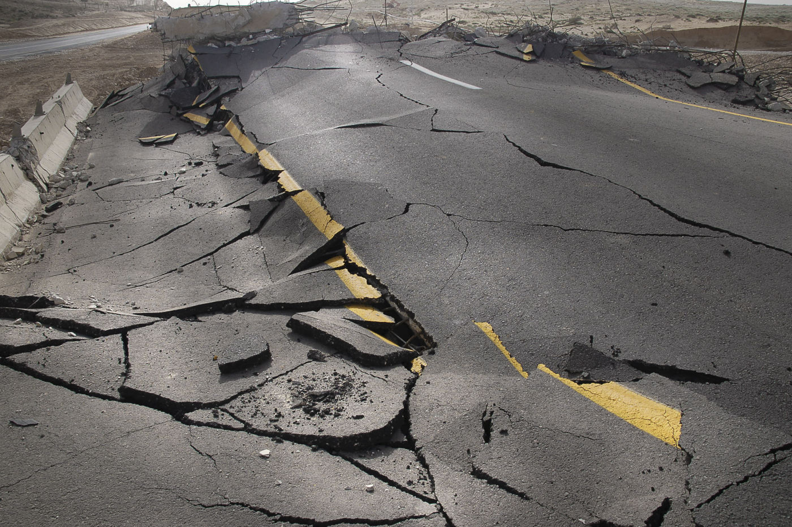

 Placed on the Cascadia Subduction fault line, the City of Portland is poised for large-scale emergency when the eventual Cascadia seismic event - the "Big One" - impacts the area. Most current services that assist citizens in preparation have often relied on distribution of hard-copied flyers or upon the citizen being observant of posted signs. Our product circumvents these shortcomings by placing avenues to emergency resources at the fingertips of the user through their mobile device. Important features of the application include locations to avoid during earthquakes, locations of resources such as emergency food water distribution, and where medical services can be accessed in a the event of a disaster.